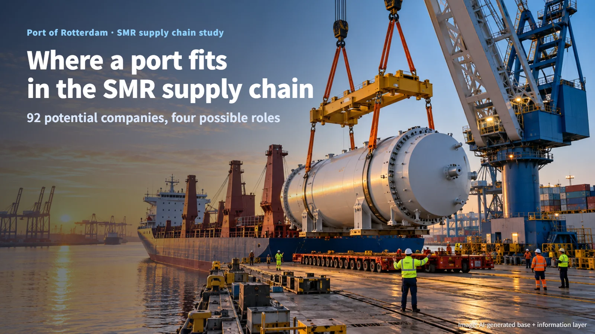
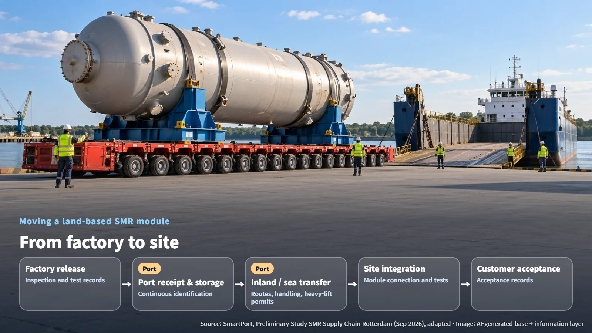
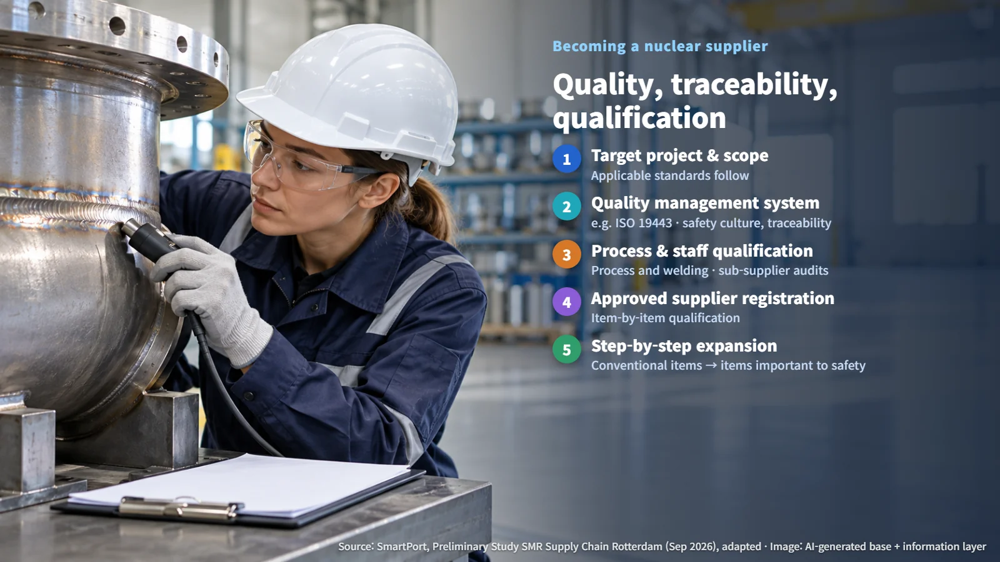

Netherlands · SMR Supply Chain
Where a Port Fits in the SMR Supply Chain: Lessons from a Rotterdam Study
An exploratory study maps 92 potential companies and four roles the Port of Rotterdam could play, from module logistics to long-term maritime nuclear services.
Where are the large components of a small modular reactor (SMR) built, and how do they reach the site? A nuclear supply chain involves far more than reactor vendors. Ships, cranes, trucks and warehouses all move with it. In October 2026, a study was released examining the roles the Port of Rotterdam in the Netherlands could take on in this supply chain. Let's follow that study to see where a port fits.

92 Companies and Four Possible Roles
The study is an exploratory piece of work commissioned by SmartPort, Deltalinqs, the Port of Rotterdam Authority, the City of Rotterdam and the Province of South Holland, and carried out by Tractebel and Technopolis Group. Around the port, the researchers identified 92 potential participating companies across transport, heavy-lift logistics, mechanical, electrical, industrial services and modular construction. Their recommendation is to confirm each company's interest, actual capabilities and willingness to invest in a follow-up phase.
The main opportunities lie less in manufacturing complete reactors and more in non-nuclear components, services and logistics that build on existing strengths. Rotterdam brings a large industrial base, heavy-lift and port logistics, marine and offshore construction experience, and connections to the European hinterland, while its nuclear-specific capabilities are still limited. The researchers summarized four roles the port could choose from:
- Logistics and transit hub: bringing components and modules into Europe and moving them inland
- Manufacturing and integration base: fabricating components and modules, and integrating marine structures and conventional systems
- European maritime nuclear hub: building nuclear-powered ships and barges, and providing long-term operating services
- Attracting fuel- and waste-related industries
(Source: SmartPort, Preliminary Study SMR Supply Chain Rotterdam, adapted)
The researchers named electricity, industrial heat, hydrogen and, in the longer term, maritime applications as areas of SMR demand. In their market outlook, the first European demonstration units arrive around 2030, and commercial deployment in the Netherlands follows in the late 2030s to early 2040s. The feasibility of installing reactors within the port itself was left as a separate question.
The Journey of a Module from Factory to Site
SMRs use a modular approach: the plant is built in blocks at a factory, shipped, and then assembled. For land-based SMRs, modules are fabricated in a factory, pass through ports and inland transport, and are integrated into one plant at the final site.
The moment a massive module is lifted off a ship and transferred at the quay onto an inland carrier is exactly where the port comes in. Even after crossing the sea, the limits of roads, railways and inland waterways shape module size and construction sequence. That is why the study highlights special-transport permits, route planning and dimensional limits. The transport route to the final site and the handover conditions at each stage of unloading, storage and installation therefore become design questions from the very beginning.
Maritime SMRs follow a different path. Because the reactor is integrated into a ship or floating platform at a shipyard or coastal industrial facility, the share of fabrication and assembly a port can take on may grow. In the end, where final integration happens determines the port's role and the shape of its contracts.

Becoming a Supplier: Quality, Traceability and Qualification
Requirements in the nuclear supply chain are built up from national regulation, design codes, the safety classification of the supplied item, and customer demands. The standards chosen by the licensed operator flow down to lower tiers of the supply chain through technical specifications and contracts. The first step in preparing, then, is to define the target project and scope of supply; the applicable standards are settled after that.
The key standard the study highlights is ISO 19443. It is a supply-chain quality management standard that builds on ISO 9001, the general quality management standard, and adds expectations around nuclear safety culture, traceability and reliability. Traceability is the ability to trace back, through records, where materials and parts came from and which processes and inspections they went through. Whether it is mandatory depends on how it is reflected in regulations, technical codes and contracts. The study also mentions 10 CFR Part 50 Appendix B and ASME NQA-1 in the United States.
Certification is followed by registration as an approved supplier with the customer and item-by-item qualification. The study gives examples such as process and welding qualifications, internal and sub-supplier audits, and tailored traceability records. A continuous record running from a component's raw material through fabrication, inspection and shipment is what allows a customer to evaluate the real scope of supply.

The study also describes a step-by-step approach that expands from conventional items to items important to safety (ITNS). Requirements vary by reactor type as well. Molten salt reactors, which use molten salt, call for high-purity salts, corrosion-resistant materials, long-term materials testing and specialized welding capabilities.
Maritime Nuclear as a Long-Term Goal
The study also presents a European port role supporting nuclear-powered ships as a long-term possibility. Nuclear fuel and waste logistics require separate licenses and requirements, and advanced services such as maintenance and refueling of nuclear-powered ships call for security, emergency response, liability arrangements and nuclear material handling facilities to be in place together.
International rules are also being developed. Chapter VIII of the International Maritime Organization (IMO) International Convention for the Safety of Life at Sea (SOLAS) covers the basic requirements for nuclear ships and links to the 1981 Code of Safety for Nuclear Merchant Ships. In May 2026, the 111th session of the IMO Maritime Safety Committee (MSC 111) approved a work plan for developing safety regulations for new technologies and fuels, including nuclear. The researchers assessed that maritime SMR applications need a long preparation period because of technology maturity and regulatory challenges. A nuclear-powered ship being serviced at the quay is a scene that comes closer as technology demonstration, regulatory development and service demand mature together.
The researchers set out four next steps: choosing a role, forming a public-private partnership, drawing up a joint competitiveness and implementation plan, and implementation. Choosing a role means weighing economic value, feasibility, social acceptance and regulatory complexity, among other factors. The next milestones to watch are the follow-up implementation plans from the port and local governments, and support measures for participating companies. The future of nuclear energy is being shaped in reactor design offices, and also in the ports and factories preparing to move and fit those components together.